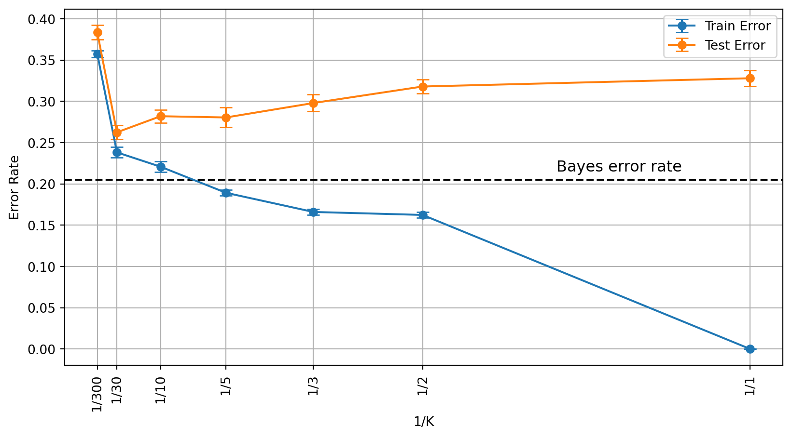

Introduction to Statistical Learning
Intro to Statistical Learning - Class 1
Giora Simchoni
gsimchoni@gmail.com and add #intro2sl in subject
Stat. and OR Department, TAU
What is Statistical Learning?
What is Statistical Learning?
- Statistical learning is the task of understanding data, and making predictions based on data
- It is a sub-domain of machine learning
- It uses statistics to build models that approximate the data
- There is a diverse set of tools for this task, where different problems calls for different tools
- We will focus on the statistical aspect of the task, and rarely mention computational aspects
Key Concepts
- The data is a set of features (covariates/ independent variables/ predictors):
- Continuous
- Ordered categorical (discrete)
- Unordered categorical
- Using them we construct a model (learner) of the data
- Usually we use the model to predict a goal:
- When the goal is continuous the model is a regression model
- When the goal is categorical the model is a classification model (classifier)
Question: Can one use regression for classification and vice versa? We will get back to it later.
Supervised and Unsupervised Learning
Supervised Learning
- Definition:
- Input: Let \(x\) be a vector of length \(n\), and let \(y = f(x) + \varepsilon\), where \(E(\varepsilon) = 0\), \(Var(\varepsilon) = \sigma^2\), \((\varepsilon, x)\) are independent
- Goal: learn \(f\) given a set of inputs \((X, y)\)
- In most cases we can only find a function \(\hat{f} \approx f\), an estimator
- The approximation is measured relative to some loss function \(L(y, \hat{y})\)
- Regression example: MSE (This will be our common choice), MAE
- Classification example: misclassification rate, recall and precision
Supervised Learning: examples
- Goal: Predict the total sales of a product in a given day
- Covariates: price, geographical region, day of week, holiday, …
- Goal: Predict if a client of a cellular company will churn
- Covariates: usage, age, socio-economical status, phone type, …
- Goal: Personalized medicine (e.g. what is the effective medicine dosage for a specific patient)
- Covariates: genes profile, effectiveness on cell tissues, …
- Drug cost is a part of the loss function \(L\)!
Supervised Learning: wage prediction
Unsupervised Learning
What if there is no \(y\)?
- Given set of features \(x\) find a model that describes properties of the data:
- Clusters
- Dependencies
- Correlations
- Common factors (PCA)
- Problems in which we model the covariates data are called unsupervised
- Most of the course: we will focus on supervised learning
Semi-supervised: there exists a goal but it is partially labeled
Parametric and Non-Parametric Models
Why estimate \(f\)?
- For prediction: Given a new instance vector \(x\), predict: \(\hat{y} = \hat{f}(x)\)
- This seems like a reasonable choice since the noise is zero-mean
- For inference: Suppose that we learned an estimator \(\hat{f}\), we can use it to learn properties of the input, such as:
- Which variables of \(x\) affects \(y\)?
- Given a subset of variables \(X^{'} \subset X\), is a variable \(X^{''} \not\subset X^{'}\) informative for \(f(y | X')\)?
- How well can we approximate \(y\)?
The Estimation Problem
How do we learn \(\hat{f}\)?
- Let \(T = \{(x_1, y_1 ) \dots (x_n, y_n)\}\) be a training sample of size \(n\)
- Note that \(x_i = \begin{pmatrix}x_{i1} \\ \vdots \\ x_{ip}\end{pmatrix}\) is a vector of \(p\) features (by notation a column vector)
- We assume that there exists a joint distribution \(X \times Y\), and that \((x_i, y_i)\) is sampled from it
- Usually we assume that the samples are iid
- In general most learning methods can be divided into parametric methods and non-parametric methods
Parametric Models
- To learn a parametric model we first assume a known parametric form for \(f(x)\), and then learn the parameters of \(f\)
- Example:
- Assume \(f(x) = \beta_0 + \beta_1 x_1 + \dots + \beta_p x_p\), namely \(f\) is a linear function of the inputs with unknown fixed coefficients
- Estimate the values of \(\beta = \beta_0, \dots, \beta_p\)
- How? For example using least squares (OLS): \(\min_\beta \sum_i {(y_i - \beta^{T}x_i)^2}\)
Non-Parametric Models
- Don’t assume the form of \(f(x)\), the model just wants \(f(x)\) to be close to the data
- Under the assumption that \(f(x)\) belongs to a wide family of smooth functions
- Example:
- Splines – smooth piecewise polynomials.
- Why do we need the smoothness for?
- If we remove the smoothness assumption then what is the best \(f(x)\)? Is it a good choice?
- We will get back to them later in the course
From Linear Regression to Splines

The rough spline seems to be overfitting the data.
Overfitting
Train and Test
- The goal of a model is its predictive power, namely how well will it fit on a new/unseen/out-of-sample set of observations.
- The new set of observations is called test set (as opposed to the train set).
- Usually:
- Dividing the data to a train and test sets
- Learn models on train set, select models based on their performance on the test set
Prediction Error: first decomposition
- Assume an observation \((x, y)\), \(\hat{y} = \hat{f}(x)\) is given, \(L(y, \hat{y})\) is the MSE
- What is the expected loss?
\(E_y[(y - \hat{f}(x))^2] = E[(f(x) + \varepsilon - \hat{f}(x))^2] = [f(x) - \hat{f}(x)]^2 + Var(\varepsilon)\)
- First term: reducible error
- Second term: irreducible error
- Which part should we minimize?
A taste of overfitting
- But given an observation \((x, y, \hat{y}(x))\), we never know which part of its error is irreducible!
- Informally, being too close to the data is called overfitting
- So the best prediction for a given \(x\) is not necessarily \(y\)!
- Overfitting may get worse for non-parametric models (highly flexible)
Overfitting with Splines
Why do we prefer simple models?
- The simpler the more interpretable (try to explain Splines)
- Simpler for inference
- Reduces overfitting
- But may increase underfitting
- So: It all depends on your goal!
Why do we prefer simple models?
The Bias-Variance Tradeoff
Squared error decomposition
For regression, take the standard model: \(y = f(x) + \epsilon\;,\;\epsilon \sim (0,\sigma^2)\)
Modeling approach (e.g. OLS), given training data \(T\), gives model \(\hat{f}(x)\)
- Assume we want to predict at new point \(x_0\), and understand our expected (squared) prediction error:
\(\mathbb{E}_{y_0, T}(y_0 - \hat{f}(x_0))^2 = \mathbb{E} \left( \underbrace{\left(y_0 - f(x_0)\right)}_{A} + \underbrace{\left(f(x_0) - \mathbb{E} (\hat{f}(x_0))\right)}_{B} + \underbrace{\left(\mathbb{E} (\hat{f}(x_0)) - \hat{f}(x_0)\right)}_{C}\right)^2\)
- Note we treat both the training data \(T\) (and hence \(\hat{f}\)) and the response \(y_0\) as random variables in our expectations
Which factors are random variables, dependent on \(T\)?
\(\mathbb{E}(y_0 - \hat{f}(x_0))^2 = \mathbb{E} \left( \underbrace{\left(y_0 - f(x_0)\right)}_{A} + \underbrace{\left(f(x_0) - \mathbb{E} (\hat{f}(x_0))\right)}_{B} + \underbrace{\left(\mathbb{E} (\hat{f}(x_0)) - \hat{f}(x_0)\right)}_{C}\right)^2\)
\[A = y_0 - f(x_0)\]
\[B = f(x_0) - \mathbb{E} (\hat{f}(x_0))\]
\[C = \mathbb{E} (\hat{f}(x_0)) - \hat{f}(x_0)\]
The bias-variance decomposition
\(\mathbb{E} \left( \underbrace{\left(y_0 - f(x_0)\right)}_{A} + \underbrace{\left(f(x_0) - \mathbb{E} (\hat{f}(x_0))\right)}_{B} + \underbrace{\left(\mathbb{E} (\hat{f}(x_0)) - \hat{f}(x_0)\right)}_{C}\right)^2 =\)
\(\;\;\;\;\;\;\;\;\;\;\;= \mathbb{E} A^2 + B^2 + \mathbb{E} C^2 + 2 B \cdot \mathbb{E} A + 2 \mathbb{E} (AC) + 2B \cdot\mathbb{E} C\)
\(\mathbb{E}(A^2) = \sigma^2\) the Irreducible error of a perfect model which knows the true \(f\)
\(B^2 = \left(f(x_0) - \mathbb{E} (\hat{f}(x_0))\right)^2\) is the squared bias — a measure of approximation error (note \(B\) is not a random variable)
\(\mathbb{E}(C^2) = \mathbb{E} \left(\mathbb{E} (\hat{f}(x_0)) - \hat{f}(x_0) \right)^2\) is the variance of the prediction — a measure of estimation error
\(B \cdot\mathbb{E} A = \mathbb{E} (AC) = B \cdot \mathbb{E} C = 0\) due to independence and mean-0 relations
The bias-variance decomposition
\[\mathbb{E}(y_0 - \hat{f}(x_0))^2 = \text{irreducible error} + \text{squared bias} + \text{variance}\]
Our general intuition: as model flexibility increases, bias (approximation error) decreases and variance (estimation error) increases
For many models we can calculate and show these effects on the bias and variance of the model
The Classification Setting
Misclassification rate
- Let \(y \in \{0, 1, \dots, J - 1\}\)
- For a classifier \(\hat{f}(x)\), define the indicator \(I(y \neq \hat{y})\)
- For a sample \(T = \{(x_1, y_1 ) \dots (x_n, y_n)\}\) the training error (misclassification rate) is: \(\frac{1}{n}\sum_i I(y_i \neq \hat{y}_i)\)
- For unknown observations \((x_0, y_0)\) we are interested in the expected error rate, but we look at test error: \(\frac{1}{m}\sum_i I(y_{i,0} \neq \hat{y}_{i,0})\)
- This error rate can be decomposed into three terms as well!
We want a predictor which drives the error rate to minimum. What is that predictor?
Bayes decision boundary
Assume the conditional probability \(P(Y = 1 | X)\) is a nice, slowly changing function of \(X\):

The Bayes decision boundary is where \(P(Y = 1 | X) = 0.5\)
The Bayes classifier
- For a \(J\)-class classification problem, assume we know the probabilities \(P(Y = j | X = x) \space \forall j, x\)
- The best classifier is the Bayes classifier: \(\hat{f}(x) = \arg\max_j P(Y = j | X = x)\)
- For a \(2\)-class problem we can use the Bayes decision boundary and reach a simpler notation: \(\hat{f}(x) = 1 \space \forall x \space s.t. \space P(Y = 1 | X = x) > 0.5 \text{ otherwise } 0\)
How is Bayes classifier “best”?
\(E_Y(I(y \neq \hat{y})| X) = P(Y = 1 | X) \cdot I(\hat{y} = 0) + P(Y = 0 | X) \cdot I(\hat{y} = 1)\)
- Suppose \(P(Y = 1 | X) = 0.7\), between \(\hat{y} \in \{0, 1\}\) –> choose \(\hat{y} = 1\) to minimize \(E_Y(I(y \neq \hat{y})| X)\)
- Suppose \(P(Y = 1 | X) = 0.3\), between \(\hat{y} \in \{0, 1\}\) –>choose \(\hat{y} = 0\) to minimize \(E_Y(I(y \neq \hat{y})| X)\)
- Put differently the Bayes classifier \(\hat{f}(x) = \arg\max_j P(Y = j | X = x)\) minimizes expected error rate!
The Bayes classifier is purely theoretical!

Even for this training data, the Bayes classifier will have an irreducible error rate! (classes overlap)
The Bayes error rate
- What is the Bayes classifier error?
- For a given \(x\): \(BE = 0 \cdot P(correct) + 1 \cdot P(error) = 1 - \max_j P(Y = j | X = x)\)
- Therefore for a test set the expected error rate is given by: \(1 - E\left(\max_j P(Y = j | X = x)\right)\)
- This bound is the lowest error rate achievable (under our assumptions), similar to the irreducible error in regression
- Sampling additional test observations in the example we reach test error rate of 0.205
But in practice the conditional probability is unknown. How can we approximate it?
The KNN Classifier
K-Nearest Neighbors
- Let \(K\) be a positive integer, and let \(T\) be the training set
- Classification rule for new observation \(x_0\):
- Let the \(K\)-neighborhood \(\mathcal{N}(x_0)\) the \(K\) points closest to \(x_0\) in \(T\)
- \(\hat{f}(x_0) = \arg\max_j \left[\sum I(y(x) = j) | x' \in \mathcal{N}(x_0)\right]\)
- Under what conditions is it an approximation to the Bayes classifier?
KNN vs. Bayes classifier

(For \(K = 10\) test error rate 0.270, only slightly worse than Bayes error rate!)
KNN and bias-variance tradeoff

- How can we efficiently find a neighborhood of an observation?
- For small \(K\): classifier is flexible but has high variance
- For large \(K\): classifier is stable but suffers from high bias
- There is no way to escape this bias-variance tradeoff
- So how to choose \(K\)?
How to choose \(K\)?

- Sometimes we have prior knowledge, can choose \(K\) from theoretical considerations
- In most real-life problems, choosing \(K\) requires some additional data we use to validate our model